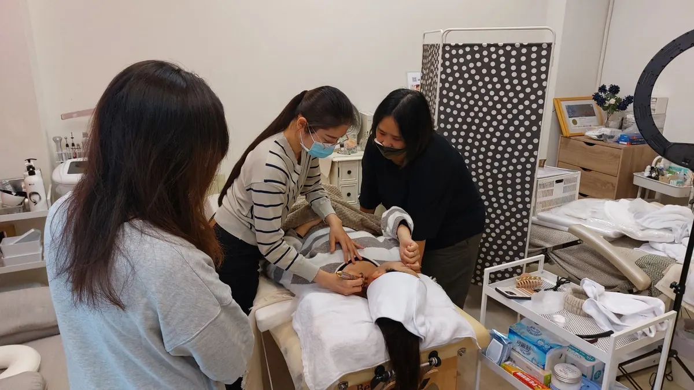

The Bojin Journal · Eyes
Under-eye bags after 50? A gentle 5-minute reset

Some of what you see under your eyes is fluid that pooled overnight. Some of it is the way this area changes with age. A gentle ritual can soften the fluid part and help you look less tired and more rested. It won't remove a true bag or loose skin. Even so, many women are surprised how much brighter the eye area can look after a few careful minutes.
Why do bags show up under my eyes now, when they never used to?
A few things happen over the years, and none of them are your fault. The little fat pads that cushion the area under your eyes shift and settle forward, so they catch the light differently. The skin here is thin, too, and loses some of its firmness, so everything looks a little softer and more relaxed than it once did.
There's also a fluid story. While you sleep lying down, fluid gathers under the eyes because the natural drainage here slows with age. That's why the puffiness is often worst first thing in the morning and eases as the day goes on and you're upright and moving.
So what you're seeing is usually a mix: some structure that changed, and some fluid sitting there with nowhere to go yet. The fluid part is the part a gentle reset can help move along.
How the Bojin Method helps the eye area
First, what bojin is. If you already know gua sha, you have a head start: bojin grew from the same family of Chinese hands-on face care, so it will feel familiar. It's still its own deliberate method. What makes it work is three things: the order you work in, the angle you hold the tool, and the exact spot you're working.
The traditional tool is a bojin stick: a slim, polished stainless steel tool shaped to follow the curves of the face, and you use its rounded edge. You can start with clean fingertips or a smooth-edged tool you already own while you learn the moves, though the stick is what the method was built around. The pressure isn't the barely-there touch people assume, and it isn't forceful either. It's the right, comfortable pressure for you: firm enough to be felt, never enough to hurt or drag this delicate skin.
If a tool you already own never seemed to do much here, that wasn't your fault. Most of us were handed a tool with no method attached: no one showed us the order to follow, the angle to hold, or the exact place to work. Add that method under the eye and along the sides of the neck, and the same few minutes feel different.
Under your eyes, comfortable pressure matters more than hard or light. Hold the right angle, and work in the right order and the right spot. That sequence, angle, and placement is the method.
The 5-minute under-eye reset
Use the rounded edge of your bojin stick, or clean fingertips while you learn. Add a little oil or eye cream first so nothing drags. Work in order, follow the angle of the bone under your eye, and use the right comfortable pressure: firm enough to feel, never enough to hurt. The whole thing takes about five minutes, and the last step is the one most people skip.
- Warm and settle first Rest your palms over your closed eyes for a few slow breaths, then smooth a little cream around the whole eye area. This settles you and helps the skin glide instead of pull.
- Read your face first Look in the mirror and notice which side is puffier this morning, and where the fluid seems to sit. Start on the more swollen side. That sets the order you'll work in.
- Glide along the socket bone With the rounded edge of your bojin stick or a fingertip, glide from the inner corner outward along the bone under your eye. Keep the angle low against the bone and the pressure comfortable, never on the eyeball itself.
- Ease out toward the temple Continue the same gentle glide from the outer corner out toward your temple, following the natural angle of the cheekbone. This is where fluid starts to move away from under the eye.
- Finish down the sides of the neck This is the step people skip. Sweep slowly down the sides of your neck a few times so the fluid you moved has somewhere to drain. Without it, everything you did above has nowhere to go.
What can I expect?
Done most days, this can help the morning puffiness ease a little sooner, so your under-eye area looks less swollen, a bit brighter, and more rested. Many women tell me the nicest part is a small hit of confidence at the mirror before they head out. Worked in with your eye cream, the gentle movement can also help the product sink in rather than sit on top.
Now the honest limits. This is a soothing self-care ritual, not a treatment. It won't remove a true under-eye bag, tighten loose skin, or change the fat pads that shifted with age. What it helps is the fluid part and how tired the area looks: the everyday, gentle wins. And if a bag appears suddenly, sits on only one side, feels painful, or comes with other changes, don't wait on a ritual. See your doctor.
A few careful minutes most mornings won't turn back the clock, but they can leave you looking a little more awake, and feeling a little calmer as you start your day.
Quick answers
Can I get rid of my under-eye bags with this?
No. Nothing you do with your hands at home will remove a true bag, or the fat pads and loose skin that come with age. What it can do is move the fluid that pools overnight, so the area looks less puffy and less tired. It's a gentle everyday improvement, not a fix.
Do I need a bojin stick, or can I use a gua sha stone?
You can start with a gua sha stone or clean fingertips while you learn the moves. A bojin stick is the traditional tool, shaped to follow the face. The real difference, though, is the method, not the object in your hand: working in the right order, at the right angle and spot, with comfortable pressure.
How hard should I press under my eyes?
Comfortably firm: enough that you can feel it, never enough to hurt or drag the skin. This area is thin and delicate, so let the angle against the bone do the work instead of pressing harder. Too light does nothing; too hard is wrong. It should feel good.
How often should I do this to see a difference?
Two to three mornings a week is a good rhythm, since puffiness tends to be worst when you first wake up. It is a gentle ritual, so consistency matters more than intensity. A calm few minutes, a few times a week, will do far more than one forceful session. Give it a few weeks and notice how the area looks.
See the order, angle, and spot for yourself
Reading about it only goes so far. Watch the free 3-minute video and I'll show you where to work under the eye, the angle to hold, the order to follow, and how to feel the right comfortable pressure, so your next five minutes count.
Watch the free 3-min videoYu-Ting Lan is a Taiwan-based international bojin instructor and the founder of Héhé Studio. She has taught her bojin method to more than a thousand students, from complete beginners to grandmothers, across Taiwan, Hong Kong, and Malaysia.